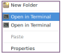
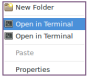

when u click “right click” inside whonix files (anywhere) it will show up two terminals:-

uploaded to the upstream:-

when u click “right click” inside whonix files (anywhere) it will show up two terminals:-

uploaded to the upstream:-
Please state the name of the file manager.
Please state the name of the file manager.
aaa not sure if i got what do u mean by it. sorry but can u give a hint on what is “file manager”.
Dolphin? Thunar? Otherwise?
Qubes KDE , Dolphin
Screenshot looks like Nautilus.
Nautilus wasn’t installed by default in my fresh Whonix-WS-12.
Whonix-WS-12 Dolphin works fine here.
Nautilus in my Debian-8 VMs doesn’t have this issue either.
Are you running Whonix-11 that was upgraded to 12?
well actually this is Qubes OS , so whonix is kinda UI because it doesnt use its file manager but Whonix uses QUbes instead.
so i have installed Qubes with its default KDE. which mean im using dolphin.
one thing might im mistaking in , Qubes doesnt use dolphin witha KDE? which is unlikely.
Qubes dom0 (KDE): No file manager installed.
Fedora-23 Template (Gnome): uses Nautilus
Debian-8 Template (Gnome): uses Nautilus
Whonix-12 GW & WS (KDE): uses Dolphin
IIRC, Whonix-11 installed both Nautilus & Dophin, so upgrading that to 12 might have caused your issue?
Qubes dom0 (KDE): No file manager installed.
Fedora-23 Template (Gnome): uses Nautilus
Debian-8 Template (Gnome): uses Nautilus
Whonix-12 GW & WS (KDE): uses Dolphin
hmm , what im pretty sure from is that i dont have any gnome in my Qubes. i chooses to install only KDE when i have installed Qubes into my pc. i do have plasma and plasma comes with KDE (unity with gnome). see:-
IIRC, Whonix-11 installed both Nautilus & Dophin, so upgrading that to 12 might have caused your issue?
i have started fresh whonix 12 in order to test things from ground zero. so i didnt upgrade whonix 11 to whonix 12.
but the good question is, might be that whonix and qubes (fedora) both of them having KDE installed inside them so they r crushing each other or giving multiple same shortcuts names ?
The UI you see on your desktop is provided by KWin Window Manager which is a part of the KDE Desktop Environment you installed to your Qubes dom0.
Remember though that each VM you create is a self-contained OS that can each have its own Desktop Environment. Just because you don’t see it doesn’t mean it isn’t there. Try running gnome-control-center in one of your Fedora-23 VM terminals.
i have started fresh whonix 12 in order to test things from ground zero. so i didnt upgrade whonix 11 to whonix 12.
Strange, I don’t have Nautilus in my Whonix VMs. Are you sure you are launching Files program from your Whonix VMs? and not from sys-net?
Strange, I don’t have Nautilus in my Whonix VMs. Are you sure you are launching Files program from your Whonix VMs? and not from sys-net?
yeah the normal stages. Qubes VM Manager then press start button = whonix working.
but regarding whonix 12 and its “File Manager” inside Qubes im not sure how to answer it. maybe @Patrick has better explanation for this.
{kind=link}